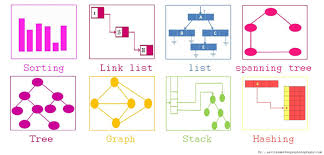
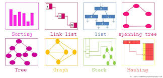

What are data structures
In standard definitions, Types are collection of values such as true,false, 1, 0, Data types are types collections of operations to manipulate the types, such as +,-,*,-. Abstract data type are specifications of the data types (what defines them). And Data structure is bascially the implementation of Abstract data types. In short, data structures are the implementations of how manage stored information in computers.
 

Big O
Big O notations are used to described the complexiy of algorithms, you can think of it as how many process the computer has to go through run the algorihm with the given intput.
Examples:
-
int a = 10;
- O(1), staetment only execute; once
-
for (int i =0; i < N; i++){
print("Hello World");
}
- O(N), The inner statement prints N times
-
for (int i =0; i < N; i++){
for (int j =0; j %lt Nl j++;){
print("Hello World");
}
}
- O(N^2), The outer loop runs N times, inner loop runs N times, the statement inside inner loop runs N^2 times.